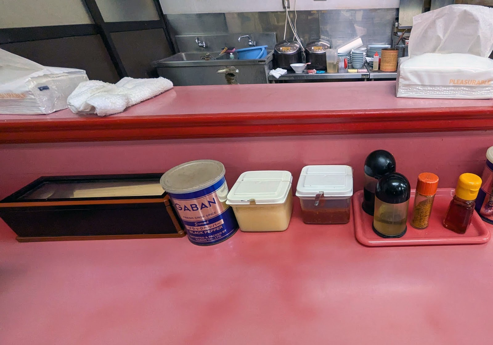

History
店主・お店の歩み
山下家は、地元・牛久で名高い豚骨ラーメンの名店で長年腕を磨いた初代店主が、この取手・戸頭の地に暖簾を掲げたのが始まりです。
昭和の頃から続く食堂のような佇まいを大切にしながら、現在は2代目とお母様が二人三脚でお店を切り盛りしています。大きな看板を掲げるわけではありませんが、一杯一杯を丁寧に出す姿勢は、初代の頃から変わっていません。
Noodle & Soup
麺・スープへのこだわり
スープは豚骨をベースにした、家系寄りのしっかりとした味わい。その日の仕込み具合によって表情が変わるのも、手作りならではの味です。
麺は地元・菅野製麺所が打つ中太のプリプリ麺を使用しています。スープとよく絡む食感を楽しんでいただけるよう、麺屋との付き合いも長く続けています。
醤油・塩・味噌など、複数のスープをご用意していますので、その日の気分やお好みに合わせてお選びいただけます。

写真提供: yasuki0719（Googleマップ）

写真提供: とりで工房（Googleマップ）
Atmosphere
店内の雰囲気
店内に一歩入ると目に入るのは、赤いカウンターと奥に広がる座敷席。昭和レトロな雰囲気を残したまま、時代に合わせて丁寧に手入れをしながら使い続けています。
BGMは流していません。厨房の音や、常連さんとの何気ない会話が聞こえる、どこか懐かしい静けさが山下家の持ち味です。
お子様連れのご家族も、女性おひとりのお客様も、まるで地元の定食屋に立ち寄るような感覚で気軽に入っていただける店でありたいと考えています。そうした雰囲気を感じ取っていただけたというお声もいただいており、これからも大切にしていきたい持ち味です。

写真提供: とりで工房（Googleマップ）
How to order
食券制のご案内
- ご来店
- 入口の食券機で食券をお求めください
- お好きなお席へどうぞ
山下家は食券制です。ご来店後はまず入口の食券機で食券をお求めのうえ、お好きなお席にお座りください。慣れない方でも迷わないよう、店内にご案内を掲示しています。価格・詳しいメニューは店頭の食券機にてご確認いただけます。